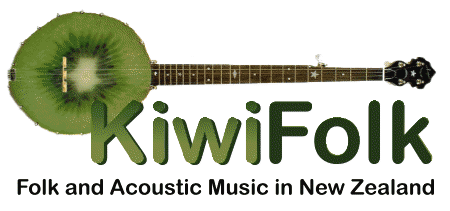

|
HOME
ARTISTS
CLUBS
FESTIVALS
INSTRUMENTS
LINKS
NZ TOURS
PHOTOS
RESOURCES
SESSIONS
TUNES
UPDATES
|
|

Updates
A list of what has changed on this site. The most recent changes are listed first.
12/10/15
- Captital Blues updated ("Clubs")
- East Coast Folk Club added ("Clubs")
5/10/15
- Wellingon Open Mic ("Open Mics": see "Sessions")
- Plimmerton Open Mic ("Open Mics": see "Sessions")
- Sonora Stringed Instrument Repair ("Instruments")
1/8/15
- Mangaweka Adventure Company added ("NZ Tours")
15/7/15
- Te Aroha Folk & Acoustic Music Club added ("Clubs")
14/7/15
- Tawa Folk Club Updated("Clubs")
7/7/15
- UK Folk Music added("Links")
- Goldbeard Guitars added ("Instruments")
- Kevin Almy removed ("Instruments")
- Ian's Violin Shop added ("Instruments")
- Whangateau Folk Music and Social Club added ("Clubs")
- Crystal Starr added ("Artists")
- Levin Folk Music Club updated ("Clubs")
- Tauranga & Katikati Acoustic Music Festival deleted ("Festivals")
- Aongatete Festival ‘Folk under the Figs’ added ("Festivals")
- Christchurch Folk Music Club updated ("Clubs")
31/5/2014
- Up The Mountain ("Festivals")
- Wellington Bluegrass Society updated ("Clubs")
- Dette's Mince Pies added ("Tunes")
12/5/2014
- Acoustic Routes updated ("Clubs")
11/5/2014
- Rafters Music Club updated ("Clubs")
- Helen Dorothy added ("Artists")
- Several changes made to "Tunes" page
- Hamsterfest updated ("Festivals")
- Mainly Acoustic Upper Hutt updated ("Clubs")
- Hamilton Acoustic Music Club updated ("Clubs")
- Binford Luthiery added ("Instruments")
- Ceol Mhor added ("Instruments")
- Hibiscus Coast Folk Club added ("Clubs")
- Barebones Folk Instruments added ("Instruments")
- Folk Under The Mountain added ("Festivals")
15/9/2013
- Bob Large updated ("Artists")
- Northumbrian Pipers Society removed ("Clubs")
- Tir Na N'Og Folk Music Club removed ("Clubs")
- Titirangi Folk Club updated ("Clubs")
- East Coast Folk Club updated ("Clubs")
- Bunker Hill Folk Review added ("Sessions")
- Fire in the Mountain added ("Sessions")
- Florrie McGreal's updated ("Sessions")
- Thirsty Dog updated ("Sessions")
- Irish Tunes session, Clare Inn updated ("Sessions")
- Open Mic, One2One added ("Sessions")
- Singer-songwriter night, Clare Inn added ("Sessions")
- The Fork and Tap (Arrowtown) added ("Sessions")
- Palmerston North Folk Club updated ("Clubs")
- Whangarei Acoustic Music Club added ("Clubs")
- Biddy Mulligans session updated ("Sessions")
- Cambridge session updated ("Sessions")
- Unicorns n Pheasants added ("Instrument Traders")
- Acoustic Routes (Nelson) updated ("Clubs")
- Circle Session (Nelson) added ("Sessions")
- Singing Session (Nelson) added ("Sessions")
- Kapiti Live Music Club updated ("Clubs")
- Katikati Folk Club updated ("Clubs")
- Windy City Strugglers deleted ("Artists")
21/4/2013
- Waharau Winter Festival updated ("Festivals")
- Footspa Reel added ("Tunes")
- The Copenhagen added ("Tunes")
- TRAAMPS updated ("Clubs")
- "A Trifle Bazaar" removed ("Artists")
- "Rosewood" added ("Artists")
- Cambridge session updated ("Sessions")
- English Folk Dancing (Belmont) removed ("Clubs")
- English Country Dance and Historical Dance (Northcote) added ("Clubs")
- Levin Folk Club updated ("Clubs")
- Ceol Anas updated ("Festivals")
- The Bog/McCarthy's session removed ("Sessions")
- Florrie McGreals session updated ("Sessions")
24/10/2012
- The Footspa Reel added ("Tunes")
- Nelson Multicultural Folk Festival updated ("Festivals")
- Rafters Music Club updated ("Clubs")
Maps of folk-friendly venues added ("NZ Tours")
- Mike Considine added ("Artists")
- Waharau Winter Festival added ("Festivals")
- Tauranga Acoustic Music Club updated ("Clubs")
15/5/2012
- Biddy Mulligan's Session, Hamilton, updated ("Sessions")
- The Gazebo Girls added ("Artists")
- Wellington Bluegrass Society updated ("Clubs")
- Welsh Dragon Bar session removed ("Sessions")
- Waharau Winter Festival removed ("Festivals")
3/3/2012
- Christchurch Contradance added ("Clubs")
- Twisted Timber added ("Artists")
- Rose and Thistle altered to Pegasus Arms ("Sessions")
- TRAAMPS updated ("Clubs")
- AJF Guitars added ("Instruments")
- Dogs Bollix removed ("Sessions")
- Biddy Mulligan's added ("Sessions")
22/11/2011
- Phil Drane added ("Artists")
- Te Wera Festival removed ("Festivals")
- Tahora Festival added ("Festivals")
- Paretai Folk Camp added ("Festivals")
- Perfect Pizazz Ltd. added ("Instruments")
- Katikati Acoustic Music Festival added ("Festivals")
date
- FolkInfo added ("Links")
- The Remarkables added ("Artists")
- Nelson Multicultural Folk Festival ("Festivals")
7/7/2011
- Second Florrie McGreals session added ("Sessions")
- Molly Malone's session (Wellington) removed ("Sessions")
20/4/2011
- TRAAMPS added (Gisborne) ("Clubs")
- Gisborne Folk and Acoustic Music Club removed ("Clubs")
- Baillie's Session (Christchurch) removed ("Sessions")
- Rose and Thistle Session (Christchurch) added ("Sessions")
- Celtic Connexions link updated ("Instruments")
- Kiwicelt Wooden Flutes removed - link dead ("Instruments")
21/2/2011
- Dogs Bollix session updated ("Sessions")
20/2/2011
- "Banjo Tutorials" added ("Links")
- Photos from Frank Povah added ("Photos")
- Tauranga Acoustic Music Club updated ("Clubs")
- Open Mic. Clare Inn added ("Clubs")
- Terry Stringer added ("Artists")
- Mitchell's Bagpipe Centre added ("Instruments")
- Karapiro Village session added ("Sessions")
- van der Gaag Guitars added ("Instruments")
- Florrie McGreals' session added ("Sessions")
28/9/2010
- "Notable" removed ("NZ Tours")
- Nelson Morris updated ("Clubs")
30/8/2010
- Celtanz updated ("Festivals")
- Lombardy Folk Stuff updated ("Links")
- The Auckland Bluegrass and Old Time Country Music Club ("Clubs")
- Hastings session updated ("Sessions")
27/5/2010
- Wellington Bluegrass Society updated ("Clubs")
- Paul and Penny updated ("Artists")
- Katikati Folk Club updated ("Clubs")
12/3/2010
- "New Roots" (Bunker) session removed ("Sessions")
- Maen Fiddler session removed ("Sessions")
- Meltdown Festival removed ("Festivals")
- "Autoharp" added ("New Links")
23/2/2010
- Ballads, Bards and Bulldust updated ("Festivals")
- NZLive changed to Eventfinder ("NZ Links")
21/2/2010
- Singers Club deleted ("Clubs")
- Marg Layton updated ("Artists")
- Whitestone Festival updated ("Festivals")
- Tauranga Folk Club updated ("Clubs")
- House Concerts Australia added ("Links")
20/1/2010
- Baillie's session (Christchurch) updated ("Sessions")
- Titirangi FMC updated ("Clubs")
- Acoustic Routes Nelson updated ("Clubs")
- Nelson Morris added ("Clubs")
- Marlborough Folk Club removed ("Clubs")
19/1/2010
- "Occasional House Concerts" (Lepperton) deleted ("Clubs")
- Bailies session (Christchurch) updated ("Sessions")
- Paul and Penny added ("Artists")
- "Trackless" added ("Tunes")
- "Hohepa Fair" added ("Tunes")
- "Bees in the Lavender" added ("Tunes")
- Waitakere Folk Club removed ("Clubs")
- Acoustic Routes (Wellington) updated ("Clubs")
-
17/10/2009
- A Trifle Bazaar added ("Artists")
- Welsh Dragon Bar Singing Session added ("Sessions")
- Thirsty Dog Folk Club updated ("Clubs")
- Whangarei Folk Music Club updated ("Clubs")
- Celtanz Celtic Music Camp updated ("Festivals")
- Beverly and the Clench Mountain Boys added ("Artists")
- Wires and Wood added ("Artists")
- "Resist Despair" added ("Tunes")
- "The Hills of Kaitoke" added ("Tunes")
15/8/2009
- Mr Glyn's Guitar Repair added ("Instruments")
- Christchurch Folk Music Club updated ("Clubs")
- Waharau Winter Shakeup updated ("Festivals")
- Flying Piglets Deleted ("NZ Tours")
- Kerikeri Folk Music Club updated ("Clubs")
7/6/2009
- Thirsty Dog updated ("Sessions")
- Accoustic Routes updated ("Clubs")
9/5/2009
- Monde Marie added ("NZ Links")
- Katikati club updated ("Clubs")
- East Coast Folk Club updated ("Clubs")
- "Occasional House Concerts (Taranaki) updated ("Clubs")
- Rosie O'Grady's updated (Hastings) ("Sessions")
10/3/2009
- Rafters Music Club updated ("Clubs")
- Wairarapa Folk Club updated ("Clubs")
- Ashburton open mic temporarily removed ("Clubs")
28/2/2009
- Bards, Ballads & Bulldust festival added ("Festivals")
- Kerikeri folk club updated ("Clubs")
- K Road folk club added ("Clubs")
- Madill Guitars added ("Instruments")
21/2/2009
- Link to Whitestone Festival updated ("Festivals")
- Tauranga Acoustic Music Club added ("Clubs")
- Marg Layton added ("Artists")
- Whangarei Folk Music Club updated ("Clubs")
17/1/2009
- "Alistair's Music" added ("Instruments")
- Katikati Folk Club updated ("Clubs")
- Kohukohu Folk Festival added ("Festivals")
- Waihi Bush Folk Festival updated ("Festivals")
- Thames Folk Group removed ("Clubs")
- "Occasional House Concerts" (Taranaki) updated ("Clubs")
18/11/2008
- Clare Inn session, Auckland ("Sessions")
- Bog session, Auckland ("Sessions")
- Thirsty Dog session, Auckland ("Sessions")
- Noblewoman ("Links" "NZ Folk and Acoustic Music")
- Hellen Webby and Davy Stuart updated ("Artists")
2/9/2008
- Marlborough Folk Club updated ("Clubs")
- The New Zealand Bagpipe Co. added ("Instruments")
- Kerikeri Folk Music Club updated ("Clubs")
- The Singers' Club updated ("Clubs")
- Christchurch Folk Music Club updated ("Clubs")
- Acousticity Rotorua updated ("Clubs")
- Bent Horseshoe sessions added ("Clubs")
16/7/2008
- Titirangi Folk Club updated ("Clubs")
- Links added ("Links" - New Links)
- Celtic Connexions updated ("Instruments")
27/5/2008
- Celticanz updated ("Festivals")
- Christchurch Folk Music Club updated ("Clubs")
- Mountain Folk Club removed ("Clubs")
15/8/2008
- Robyn Sutherland added ("Artists")
- Nor'west Arch Morris updated ("Clubs")
- Devonport Folk Club updated ("Clubs")
- Bailie's session added ("Sessions")
24/3/2008
- Judith McNeil added ("Artists")
- Hamilton Acoustic Music Club updated ("Clubs")
- Kerikeri Folk Music Club updated ("Clubs")
- "Learn Guitar Online" added ("Links")
- East Coast Folk Club updated ("Clubs")
- Footspa added ("Artists")
- "A Traditional Music Library" added ("Links")
7/2/2008
- Waitakere Folk Club updated ("Clubs")
- New Edinburgh Folk Club updated ("Clubs")
- "Some myths about microphones" added ("New Links")
22/1/2008
- Owen Hugh added ("Artists")
- "The World's Oldest Guitar?" added ("New Links")
- Southern Hemisphere International School of Scottish Fiddle updated ("Festivals")
- "A Guide to the Irish Flute" added ("New Links")
- "The Flow" added ("New Links")
- "How to Play the Irish Flute" added ("New Links")
7/12/2007
- Notable updated ("NZ Tours")
- Singingwood added ("Instruments")
- Fado added ("New Links")
- Roots of American Fiddle Music added ("New Links")
- Native Ground Music added ("New Links")
- Encyclopaedia of Cajun Culture added ("New Links")
- English Folk Performers added ("New Links")
- Mark Laurent and Brenda Liddiard updated ("Artists")
27/10/2007
- Hastings session updated ("Sessions")
- Paul Metsers added ("Artists")
- New Zealand Folk Archives added ("Links")
10/9/2007
- Towhead updated ("Artists")
- Celtanz added ("Festivals")
- Canterbury Folk Festival updated ("Festivals")
- Select Sound added ("NZ Tours")
- An t-Úbh sa Néad added ("Tunes")
- Poirt An Dhroim added ("Tunes")
- Ril Bothuna added ("Tunes")
- TonalityGUIDE added ("New Links")
3/9/2007
- Delgirl added ("Artists")
- Towhead added ("Artists")
- Little Woolly added ("Artists")
- The Lively Jig added ("Tunes")
- The Tobermory Ferry added ("Tunes")
- Ruth's Waltz added ("Tunes")
- The Muse's Muse added ("New Links")
- Mandotunes added ("New Links")
- NZ Northumbrian Pipers' Society updated ("Clubs")
2/8/2007
- "Lombardy Folk Stuff" added ("Links")
- Kapiti Live Music Club updated ("Clubs")
- 5-String Banjo! added ("Links")
- City of Auckland Morris Dancers updated ("Clubs")
12/7/2007
- Mahinaarangi Tocker updated ("Artists")
- Fran's Music Pages updated ("Links")
- New Edinburgh Folk Club updated ("Clubs")
- String Workshop added ("Instruments")
- Martin Guitar Shop added ("Instruments")
24/6/2007
- "New Zealand Folk Music Venues" added ("Links")
- Celtic Music NZ added ("Links")
- Mountain Folk Club (formerly Taranaki Folk Club) updated ("Clubs")
- Fran's Music Photos added ("Links")
- Nut Point Gallery added ("NZ Tours")
- Barrie's Balls added ("Tunes")
2/6/2007
- New links added ("Links")
- Ashburton Open Mic added ("Clubs")
- "Mandolinata" added ("Artists")
- Mahinaarangi Tocker added ("Artists")
- Waitakere session updated ("Sessions")
- "Lamppost" added ("NZ Tours")
8/5/2007
- New links added ("Links")
- Taranaki Folk Club added ("Clubs")
- Auckland Bluegrass Club updated ("Clubs")
- Kapiti Live Music Club updated ("Clubs")
29/3/2007
- Ceol Alba added ("Clubs")
- New links added ("Links")
14/3/2007
- Athena Group added ("Clubs")
- Tauranga Music Club removed ("Clubs")
- Tauranga International Dance Group added ("Clubs")
- Dance Folkus International updated ("Clubs")
- Hamilton Acoustic Music Club updated ("Clubs")
- Celtica Dance Club updated ("Clubs")
- Heart of the Sun Morris updated ("Clubs")
- Gisborne Folk and Acoustic Club added ("Clubs")
- Paper Mulberry Café added ("Clubs")
- Phoenix Morris updated ("Clubs")
- Palmerston North Folk Music Club updated ("Clubs")
- Rosewood Morris Dancers updated ("Clubs")
- Levin Folk Club updated ("Clubs")
- Britannic Bedlam Morris updated ("Clubs")
- NZ Morris Dancing added ("Clubs")
- White Rose Morris updated ("Clubs")
- Pukerua Bay club updated ("Clubs")
- Wellington Bluegrass Society updated ("Clubs")
- International Folk Dancing removed ("Clubs")
- Kapiti Live Music Club updated ("Clubs")
- Acoustic Routes Nelson updated ("Clubs")
- Vintage Morris updated ("Clubs")
- Christchurch Country Dance Club updated ("Clubs")
- Christchurch Folk Music Club updated ("Clubs")
- Nor'west Arch Morris Dancers added ("Clubs")
- Tussock Jumpers updated ("Clubs")
- Erewhon Morris removed ("Clubs")
- Pembroke Folk Club updated ("Clubs")
- Folk Dancing for Fun added ("Clubs")
- New Edinburgh Folk Club updated ("Clubs")
- Thanks to Roger and Hilary at realmusic(at)xtra.co.nz
for new information.
- Waiheke session added ("Sessions")
13/3/2007
- Kerikeri Folk Club added ("Clubs")
- Albion Pride removed ("Clubs")
- Auckland Gaelic Society removed ("Clubs")
- Auckland Traditional Dance Club removed ("Clubs")
- Auckland Bluegrass and Old Time Country Music Club updated ("Clubs")
- Auckland Welsh Folk Dance Club removed ("Clubs")
- Ballantrae Folk Music Club removed ("Clubs")
- City of Auckland Morris Dancers updated ("Clubs")
- Devonport Folk Music Club updated ("Clubs")
- East Coast Folk Club updated ("Clubs")
- Green Man Morris removed ("Clubs")
- Knock on Wood removed ("Clubs")
- Guitar Association of NZ updated ("Clubs")
- Auckland Folk Dancing added ("Clubs")
- NZ Northumbrian Pipers Society added ("Clubs")
- Ruritanian International Dance club updated ("Clubs")
- Tir Na n'Og Folk Music Club updated ("Clubs")
- Titirangi Folk Music Club updated ("Clubs")
- Waitakere Folk Club updated ("Clubs")
- Katikati Folk Club updated ("Clubs")
- Thanks to Roger and Hilary at realmusic(at)xtra.co.nz
for new information.
26/2/2007
- New links added ("Links")
15/2/2007
- New Edinburgh Folk Club email address updated ("Clubs")
- New links added ("Links")
- Meltdown Festival added ("Festivals")
- Canterbury Jig added ("Tunes")
- Miss Louise Frampton added ("Tunes")
30/1/2007
- "The Singers' Club" (Wellington) added ("Clubs")
28/1/2007
- "Arts Calendar" replaced by "NZ Live" ("Links")
- New Zealand Guitar Association link updated ("Links")
- Kea Imagineering updated ("Links")
- "Michael's Music" removed - link broken ("Links")
- "Session" weblog removed ("Links")
- "Bouzouki" removed - broken link ("Links")
- "The Folk Pages" removed - broken link ("Links")
- Mike Consadine's details moved to "Notable" ("NZ Tours")
- "Duo Jackson" removed - broken link ("Links")
- Bill and Kath Worsfold updated ("Artists")
- "Sophie's Waltz" links fixed ("Tunes")
27/1/2007
- New Formatting
- New Links added ("Links")
- Whangarei Folk Music Club added ("Clubs")
18/1/2007
- "Mainly Acoustic" updated ("Clubs")
- Wairarapa Folk Club added ("Clubs")
- Photo caption updated ("Photos")
15/1/2007
- "Rafters Music Cafe" updated ("Clubs")
- "Acoustic Routes" updated ("Clubs")
- Richard Leschen added ("Artists")
14/1/2007
- "Anne's Fancy" added ("Tunes")
- "The Wharfdale Hornpipe" added ("Tunes")
- MIDI version of "Rommespolska" updated ("Tunes")
6/1/2007
- "Celtic Connexions" added ("Instruments")
|
|
|